| De Graafschap - Roda JC (2-1) 16 februari 2002 |
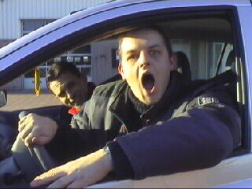
In het stadje Baarlo troffen de koempels zich met
ene PW en BW.
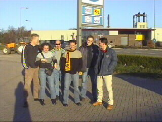
Een mooie heldere dag en iedereen die lacht!
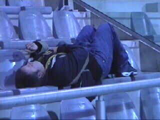
Ja.....hij weer!
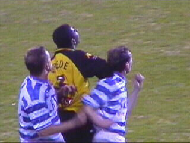
Roda liet de Graafschap komen. Roda wachtte de
eigen kansen af welke legio kwamen.
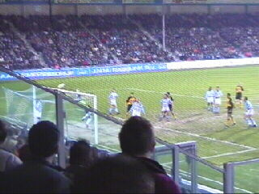
Hier belandt een kopbal op de lat. De gasten
zitten hier in een vreselijk aquarium waar ook
nog eens netten hangen.
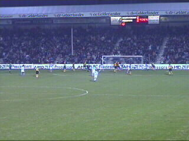
Van der Haar (r.) scoort (41).
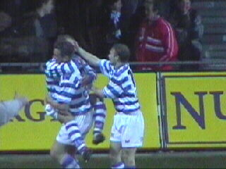
Roda dat beter speelde kreeg al vroeg in de
tweede helft een doelpunt tegen. Van Leerdam
heeft zojuist 2-0 gescoord (55).
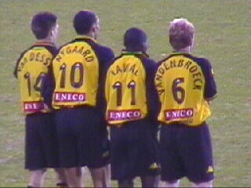
Lawal is weer terug van de Afrika-cup.
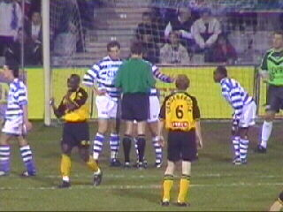
Tchoutang juicht vanwege de toegekende strafschop.
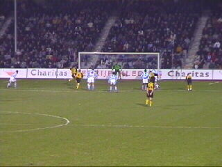
Vandenbroeck en Anastasiou rennen tegelijk op
de bal af. Maar het is Ioannis die schiet......
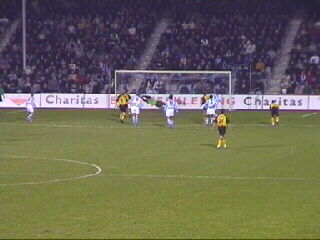
.....en scoort (61)! Er is weer hoop.
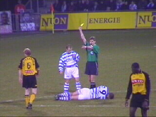
Roda incasseerde vanavond veel gele kaarten.
Hier is Vandenbroeck aan de beurt.
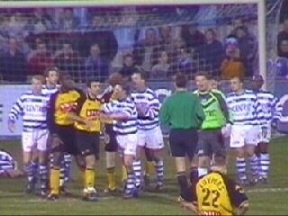
Er ontspon zich een wedstrijd die gekenmerkt
werd door een wanhoopsoffensief aan Roda-kant
en "vallende ziekte" bij De Graafschap-spelers.
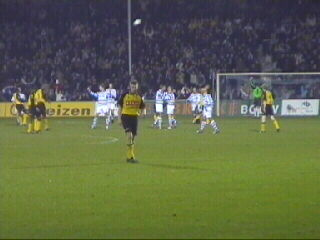
Na enkele zeer spannende momenten in de
slotfase moest Roda in dit immens belangrijke
duel capituleren.
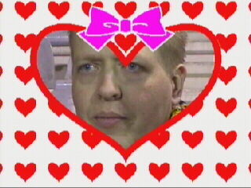
Met lede ogen werd het verlies aanvaard. Maar
de echte supporters blijven achter Roda staan, in
goede en zeker in slechte tijden ;-)
©KPD